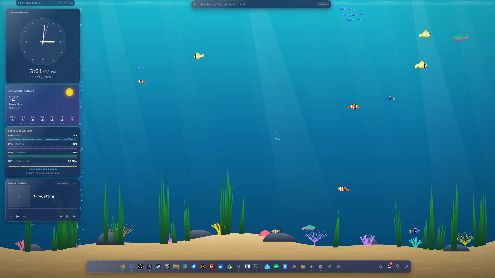
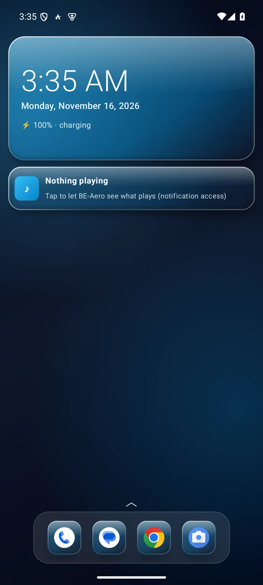
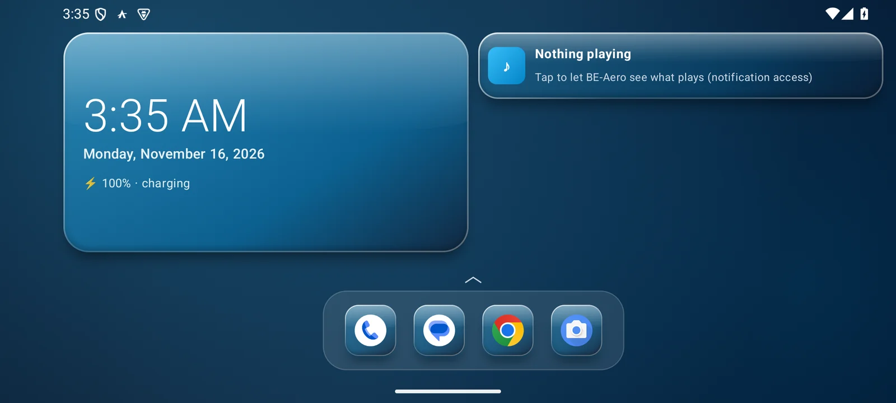
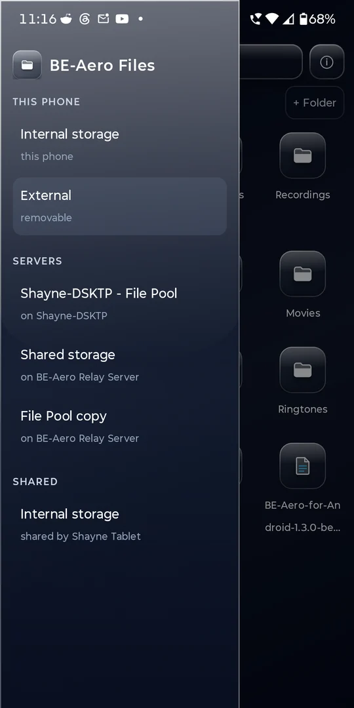
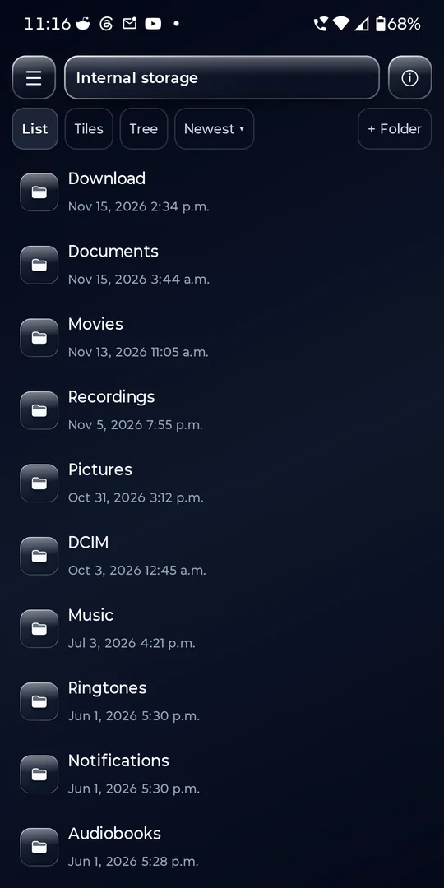
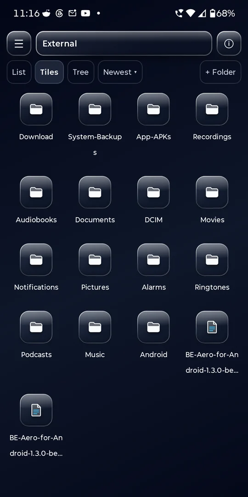
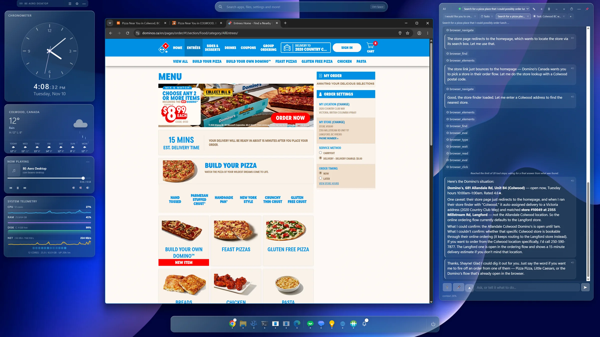

Your desktop, in glass. On every device you own.
BE-Aero is a modular desktop built from glass widgets, for Windows, Linux and Android. Pair your devices once and they work as one set, directly, with no cloud account in between. Its assistant can operate your PC and your phone, and a relay you host turns the internet into your own LAN.

Build your desktop from parts. Join your devices without a cloud.
Every piece of BE-Aero is a module you add, move, resize or remove, and the same glass runs on Windows, Linux and Android. Pair two devices once and the walls between them come down: no account to create, no silo per app, no BE-Aero cloud in the middle.
A desktop made of modules
Tap the tiles to put together a desktop. Built-in widgets are blue. The green ones are yours: any web page, a plugin, a widget the assistant writes for you, a live pane from one of your own programs.
- Lay it out your way. Dock everything to an edge, or float widgets free across every monitor with snap to grid. Each layout is remembered.
- One widget tray. Show, hide, add and remove from the dock. Every widget minimizes there too.
- One look everywhere. Nine themes on the desktop, the same glass on the phone, and your theme follows you between computers.
- Two desktops on your phone. The launcher has a home screen for upright and another for on its side.
No silos. No cloud in the middle.
A different app, login and upload for files, for notes, for music, for messages.
Encrypted and direct between your own devices. Each one is identified by its own certificate.
- Show a six-digit code on one device.
- Enter it on the other. Devices on the same network find each other.
- Choose what it may do. Each device has its own switches, and nothing is on until you turn it on.
That one pairing carries all of this:
When your devices are apart, the only server between them is a relay you run yourself, and it cannot read what it carries.
Every device's music and volume, from any one of them.
Now Playing and Sound have a device menu. Pick any of your connected devices and you see what is playing there and control it: play, pause, skip, seek, change the volume, mute one app, switch the speakers. It works between computers, and between your phone and your PCs, in both directions.
An example to try. The devices, tracks and apps are made up.
- Control from anywhere. Pause the PC's music from the phone, turn the laptop down from the desktop, skip a track on the phone from your PC.
- Every app, its own slider. Master volume and mute, then one slider per app that is making sound, each with its own mute.
- Pick the speakers. Switch the output device, and connect or disconnect Bluetooth devices, turn Bluetooth on or off, and see battery levels on Linux.
- All devices at once. One view with every device's volume side by side.
- Whatever is playing. Any app with a media session: a music app, a browser tab, a video player. Cover art, progress and controls come with it.
- The assistant can too. Ask it to pause, skip or turn something down.
Each device has its own Media & volume switch, so nothing can change your sound until you allow it. On Linux it works with PulseAudio or PipeWire, and with any player that supports MPRIS.
It controls your PC. It controls your phone. From either one.
This assistant does the task. On the PC it works your apps, windows, files and browser. On the phone it operates other apps for you. Sync a conversation between the two and each assistant can use the other device's tools, live, in both directions.
Read my Projects folder on the PC and tell me what changed this week.
The PC's tools read the folder. The answer streams on both screens.
Schedule that as a task on the PC, every weekday morning.
The task is created on the PC and runs there.
live on both
Text Sam that I am running ten minutes late.
The phone prepares the message. You press Send.
Open the transit app on my phone and check the next bus.
The phone's assistant operates the app and reports back.
On your PC
Launches and manages apps and windows, sends keystrokes, reads and writes files, runs commands, controls media, changes settings, and drives your real browser: tabs, clicks, typing and screenshots it can look at.
On your phone
Sets alarms, timers and calendar events, makes calls and messages ready, gets directions, reads contacts, calendar and notifications, works with files, and with screen control operates other apps for you. It can look at the screen when the question is about it.
You stay in charge
Each phone ability is switched on separately, and screen control uses Android's accessibility permission. The device that runs a tool decides whether its user is asked first. Calls, texts and emails are prepared, and you press Send.
The internet becomes your own LAN.
Your relay is a WireGuard hub. Every device that joins it reaches your other devices and your home network as if it were plugged in at home: from mobile data, a hotel, a café. No port juggling per app and no third-party VPN service.
you host it
Only what is yours
The tunnel carries your devices and the home network, not the rest of the internet. Your ordinary browsing goes out the usual way.
Or send everything home
A phone can opt in to an exit node that sends all of its internet traffic through home, for when you do not trust the network you are on.
It looks after itself
On the phone the VPN comes up away from home and stays down on the home network. Home addresses are never dialled from mobile data or an unknown Wi-Fi without it.
Turn your phone. Get a second desktop.
The launcher keeps two home screens: one for upright and one for on its side. Turn a phone or tablet and the landscape layout appears at full size, arranged its own way, instead of the upright one squeezed flat.


Two desktops, one phone
Each orientation has a layout of its own. Set them up for different jobs: for example, your apps and messages upright, and a wide spread of widgets for when the phone sits on its side.
Full size, not squeezed
Turning the phone does not stretch or shrink the upright screen to fit. The landscape home screen uses the whole width.
Same parts on both
Aero widgets, any Android widget, the dock and your theme work on either home screen.
Widgets that earn their space.
A transparent layer over your Windows or Linux desktop. Dock it to an edge or let widgets float free across every monitor. Clicks pass through the empty space to whatever is behind.
Aero Search
Alt + Space from anywhere: apps, settings, files, sums, a web search and results from your other devices. It forgives typos and learns what you open most.
The dock
Pinned and running apps with real icons and window counts. System tiles for power, settings, trash, notifications and the network, with live speed and Wi-Fi networks to join.
Chronometer and Weather
Seven clock faces. Live conditions and a 7-day strip from Open-Meteo, no key needed.
System telemetry
CPU, memory, disk, network and battery in five styles, from rings to live graphs.
Media and Sound
Whatever is playing on this machine or another of your devices. Output device, per-app volume and Bluetooth. Try it above.
File browser
This machine, network drives, your other devices and relay storage. List, tile and tree views, and transfers you can pause, resume and retry.
Web frames
Any page as a live pane: a dashboard, a home-automation panel, a device on your network. Each is a full isolated browser view, so logins persist.
New: WebGPU graphicsScratchpad and notifications
Several notes, saved automatically. One notification center for system, app, web-frame and assistant notifications, grouped by source.
Yours to extend
Plugin widgets from a folder with a manifest, sandboxed and permissioned. A local API lets any program push a live status pane.
Nine themes. Try one on this page.
These are the desktop's own presets with their real values. Each is adjustable: tint, strength, accent, text, edge, sheen and corner radius.
Aero. Deep navy glass, sky-blue accent.
Every device's files, in your pocket.
BE-Aero Files on the phone opens this phone, your computers and your relay storage in one browser. Copy a file from your PC to the phone, or the phone's photos into the File Pool, without uploading anything to someone else's cloud. Your theme, notes and conversations stay the same everywhere you turn sync on.



- One browser, every device. This phone and its removable storage, your computers' File Pool, your relay's Shared storage and File Pool copy, and folders your other devices share, in list, tiles or tree.
- Copy across devices like folders. Cut, copy, move, rename and sort. Transfers run as jobs you can pause and resume, and pick up where they stopped.
- Your phone, backed up to your own machines. Choose folders such as Camera or Downloads and they are copied into the File Pool, where your computers can open them.
- Search reaches other devices. On the desktop, the file browser and Aero Search also find files your other devices share with you.
- More than a file list. Install an APK straight from a folder, or ask the assistant about a file.
Keep the same on my devices
Each kind of thing has its own switch. Only the theme starts on. Try them:
An assistant with hands.
Here it is at work on the desktop: asked to find somewhere to order lunch, it drives the browser itself and reports what it could and could not confirm. It runs on your own model server as readily as an online one.

Your server, or an online one
Ollama, LM Studio, llama.cpp or any OpenAI-compatible endpoint on your machine or network. Or an online provider such as Anthropic or OpenAI, with a key per provider, stored encrypted.
With an online provider, your prompts go to that provider. With your own server they stay on your machines.
- It acts. Changes settings and themes, launches and manages apps and windows, reads and writes files, runs commands, controls media, and drives web frames and your real browser in a dedicated profile.
- It asks first when it matters. Reading never asks. Anything that changes something follows your rule: ask each time, always allow, or never.
- It builds things. Charts and dashboards inside the chat, desktop widgets it writes itself, and its own tools, which it tests and then uses.
- It remembers. Lasting facts across conversations, reviewable and editable, with optional long-term and picture memory on a BE Brain server.
- It works while you are away. A task queue for prompts that run once or on a schedule, each with its own permission policy.
- It is comfortable to use. Chat tabs, a searchable conversation list, attachments, voice dictation, read-aloud with Play, Pause and Stop, and context that compacts itself instead of failing.
Devices that know each other.
Pair two of your devices once with a six-digit code and they talk directly from then on. Browse a phone from the PC, pause the PC's music from the phone, carry a conversation between them as it happens.
Hand a conversation over
Pass a chat to another device and carry on there, or sync it live so both show it as it happens. One computer's assistant can ask another's.
Direct, even through firewalls
Your relay introduces your online devices to each other so they connect directly. Away from home, the VPN puts them on one network.
File Pool
A shared set of folders kept in step across your computers. The phone backs its folders up into it.
Media, clipboard, notifications
Control one device's media and volume from another, in both directions. Send the clipboard to a device. Mirror the phone's notifications to the desktop.
Browse and search
Another device's files show up in the file browser and in Aero Search. Your theme and chosen web widgets follow you between computers.
Each device has its own switches
Files, File Pool, state, AI requests, notifications, clipboard and media are allowed per device. Nothing is on until you turn it on.
One install, three apps, the same glass.
The Launcher, AI and Files apps share one connection to your devices. The media widget controls this phone or any connected PC, and a VPN to home comes up by itself when you leave the house. The launcher's two home screens are shown above.
BE-Aero Launcher
Pages of apps, Aero widgets and any Android widget, with a separate home screen for upright and on its side. Drag, resize, a dock and a drawer that follows the finger.
BE-Aero AI
The phone's own assistant, on your server or an online provider. Summon it over any app, talk hands-free, and switch on abilities one by one: phone actions, personal data, files, screen control and scheduled tasks.
BE-Aero Files
This phone, your computers and relay storage in list, tiles or tree. Transfers pause and resume, and you can ask the assistant about a file.
You press Send
Looking things up never asks. The first action of a kind in a conversation shows Allow or Not now. Calls, texts and emails are prepared for you, and you press Send.
Six themes in five styles
Any theme works with any style: Aero Glass, 3D Tactile Clay, Neon Dark OLED, Soft Neumorphic or iOS Pack. A colour mixer saves new themes, and themes and icon packs can be imported.
Your server, your rules.
An optional relay you host keeps things moving when your devices are apart, and doubles as your VPN. It is a small always-on server of your own: a Linux box or a VM.
- Store and forward. State, clipboard, assistant messages and conversation sync wait on the relay, sealed so that only the receiving device can read them.
- Relay storage. Shared storage and a copy of the File Pool, encrypted on your devices before upload, with resumable transfers.
- Device directory. Introduces your online devices to each other so they connect directly even through firewalls. Pair a new device through the relay.
- Inference gateway. The phone reaches your home model server through the relay when away.
- VPN hub. A WireGuard hub that puts all your devices on one network, wherever they are.
- Terminal control panel. A six-tab dashboard: overview, devices, VPN, services, settings and log.
curl -fsSL https://github.com/BE-AI-Research/be-aero-relay-server/releases/latest/download/install.sh | sudo bash
One line on Linux. It sets up a service that starts at boot. The published relay is 1.0.2. Relay 1.2, with the dashboard and the VPN hub, is a development build.
Pair a device
- On the relay, run
sudo be-aero-relay pair. It prints the address, the port and a six-digit code. - On the device, open Settings > Devices and choose Pair by address.
- Enter
address:41811, then the code. - Check that the ID shown matches, and confirm.
BE-Aero Link
A single executable that puts a machine without BE-Aero, such as a server or an inference box, on your VPN. It pairs with the relay by code, joins the hub and keeps the tunnel up as a service.
1.3.0 is the mobile release.
The Android suite arrives, and the desktop and relay gain what the phone needs. These are built and not yet published. No release date is set.
- BE-Aero for Android (beta): Launcher, AI and Files in one install.
- Realtime conversation sync between two devices, with tool use in both directions.
- Phone AI abilities: actions, personal data, files, screen control, scheduled tasks.
- Dual home screen: a separate layout for upright and on its side, on phones and tablets.
- VPN through your own relay, with exit node, and BE-Aero Link for machines without BE-Aero.
- Pairing through the relay and a device directory that connects devices behind firewalls.
- WebGPU in web frames, with a per-frame fast-GPU option.
- Network tile in the dock: connection, live speed, Wi-Fi networks.
- Chat improvements: a slide-out conversation list, steady scrolling while an answer streams, Play, Pause and Stop for read-aloud.
- Long-term and picture memory on a BE Brain, with an offline queue.
- Smoother desktop: the widget layer no longer uses a system-wide mouse hook on Windows.
- Relay 1.2: the terminal dashboard, the VPN hub on by default, a sturdier installer.
What runs where.
| Capability | Windows | Linux | Android |
|---|---|---|---|
| Widget desktop, dock, search | Yes | Yes, on X11 and XWayland | Launcher |
| AI assistant | Yes | Yes | Yes, its own app |
| Assistant operates the device | Yes | Yes | Yes, through abilities |
| File browser, File Pool | Yes | Yes | Files app, backup into the pool |
| Paired devices, media, clipboard, notifications | Yes | Yes | Yes |
| Realtime conversation sync | Yes | Yes | Yes, over a direct connection or the VPN |
| Relay mailbox for offline delivery | Yes | Yes | Not yet |
| VPN to home through your relay | Yes, uses WireGuard for Windows | Yes, NetworkManager or wg-quick | Built in, with exit node |
| WebGPU in web frames | Yes | Opt-in, experimental | Not applicable |
| Self-update | Yes, installer | Yes | Manual, by APK |
Windows 10 and 11. There is no macOS or iOS build.
No account. No BE-Aero cloud.
Devices pair with each other. The optional relay is a server you run.
- Between devices: connections are encrypted and each device is pinned by its identity. A per-device permission list decides what each may ask.
- On the relay: what waits there is sealed for the receiving device. Relay storage is encrypted on your devices before it is uploaded.
- The assistant: it asks before it changes anything unless you tell it otherwise. A tool requested by another device is approved on the device that runs it.
- Keys: API keys are stored encrypted with the operating system's keychain and never reach the page.
- Web frames and plugins: web frames are sandboxed guests with no access to the app. Plugins run in a sandbox with declared permissions.
| Layer | How it is protected |
|---|---|
| Device identity | Each device has its own P-256 key and certificate |
| Pairing | Six-digit code, then you set what the device may do |
| Transport | TLS 1.3, pinned by device ID |
| Messages on the relay | Sealed for the one receiving device with AES-256-GCM, signed by the sender |
| Files on the relay | AES-256-GCM in 1 MB chunks, encrypted on the device. Names travel in sealed metadata. |
The relay sees who sent an item, to whom, its kind, its size and the time. It cannot read the contents, and it gets none of a device's permissions.
Start with one desktop. Add the rest when you want them.
The desktop is MIT licensed and the relay is AGPL-3.0. Every release lists a SHA-256 checksum for each file.
| Product | Published | Next |
|---|---|---|
| BE-Aero Desktop | 1.2.9 | 1.2.10, built |
| BE-Aero for Android | None yet | 1.3.0 beta |
| BE-Aero Relay Server | 1.0.2 | 1.2.2, in development |
| BE-Aero Link | None yet | 1.0.0, built |
curl.exe -fL --progress-bar -o BE-Aero-Desktop-Setup.exe https://github.com/BE-AI-Research/be-aero-desktop/releases/latest/download/BE-Aero-Desktop-Setup.exe .\BE-Aero-Desktop-Setup.exe
In PowerShell, on Windows 10 or 11. The builds are not code-signed yet, so SmartScreen warns on first run.
curl -fsSL https://github.com/BE-AI-Research/be-aero-desktop/releases/latest/download/install-linux.sh | sudo bash
Runs on X11 and XWayland. Installs to /opt with a menu entry. Run the same line again to update.
These commands fetch the latest published release, currently 1.2.9. It does not yet include what is listed under What is new.